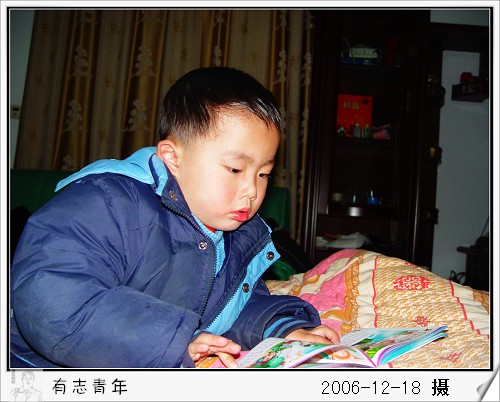

小树这次咳嗽持续的时间已经超过一个月了，其间断断续续的挂水、吃药，一直没有能够彻底根治。
物体的三态这部分内容从11月初看到《美国小学科学活动设计与示范》一书之后就想对这部分内容进行讲解，却一直没有找到合适的时机。
前天晚上喂小树吃药水，我觉得时机好像来了，就开始了这部分内容的讲解。大体过程如下：
一、液体的认识：
“小树，你看这桌子上还有什么和这个药水很象的东西吗？”〔原想小树会说茶杯里的水，妈妈的爽肤水等〕
“这个本子”〔原来这个本子的颜色也是灰色的，和药水的颜色差不多〕
“小树发现它们的颜色很象，今天我们不观察颜色，药水可以流动，桌子上杯子里的水也会流动，象这些能流动的东西我们叫它？”〔我稍作停顿〕
“液体”〔小树竟然自己接着说出来了，有点惊喜〕
“对，它们都是液体，你还知道哪些液体呢？”
“自来水，河里的水”〔小树好像仅能说出这些〕
“晚上我们吃饭时候喝的汤是液体吗？我们的口水、眼泪、鼻涕、小便……”
二、气体的认识：
“刚才我们认识了液体，液体都可以流动，我们知道喝的水是液体，药水是液体，妈妈用的护肤水是液体，我们的口水、眼泪等都是液体，它们都可以流动。”
这时候空调正好开着。
“小树，空调吹出来的是液体吗？”“好像不是！”
“不是液体，那是什么呢？爸爸告诉你，那是气体”“气体”
“我们从嘴里呼出的也是气体，我们这个房间里到处都是气体，你能看见气体吗？你能摸的着吗？”“不能”
“气体看不见摸不着，你还在哪里看到过气体？”“我们洗澡用的煤气”
“嗯，小树很聪明，煤气也是一种气体”
这部分内容除了我塞给孩子，我还真想不出其他什么好方法了。
“小树，你看这个碗里有空气吗？这个杯子里呢？被子里呢？这里到处都有气体。”
“爸爸，水里有没有空气？”“水里没有呀，所以潜水员到水下面的时候要带氧气罩哟。”
“爸爸，云外面又没有空气？”“也没有，你看蓝猫坐航天飞机都要带圆圆的头盔哟，那里面就是装的空气呢。”
气体、氧气，空气此时处于混乱状态，我想问题不大。
三、固体的教学
“小树我们房间里除了有空气，是气体；有水，是液体；你看这桌子是什么呢？”“是木头”
“嗯，木头是气体吗？是液体吗？”“都不是”
“木头是固体！”
“你找找，我们房间里还有哪些东西是固体？”
“床、床头柜、衣橱……”此时小树找的都是木制品
“门是不是固体”〔铝合金的门〕“好像不是吧”
“门不是固体？那他是液体？是气体？”“门是固体！”
“你能继续找房间里的固体吗？”
这部分内容的教学几乎没有障碍。只是教学过程中我自己遇到了一个问题，我举例“气球”是固体，气球里面的装的是气体。结果脑子中突然觉得这个例子很不合适，“气球”是固体，怎么讲孩子都不能理解，没有固定形状呀，不够坚硬呀。
今天早上小树刚醒，突然问我。
“爸爸，人身上有xue吗？”这几天小树一直看天线宝宝第一部的第三集《下雪了》，所以我迷迷糊糊的以为他问人身上是否有雪。
“你问我们身上吗？外面下的那个雪，我们说是xue，人身体里面的那个我们可以读成xie〔血〕”
“爸爸，血是液体吗？”“血是液体呀，它能流动呀。”
“爸爸，外面下的雪是液体吗？”“好像不是”〔这时候讲水的三态我觉得合适〕
“冬天下的雪是固体，太阳一晒就融化了，变成了水，水就是液体了，水慢慢的流到河里，太阳晒了之后慢慢飞到了天上，就变成了气体，到了天上就变成了云，云和云一撞就又下雪了。”
“爸爸，云和云一撞不是下雨的吗？”〔以前一直讲是下雨的〕
“嗯，刚开始从云里出来的是雨哟，可是冬天太冷了，雨刚从云里出来就被冻住了，变成了很小很小很小很小的冰，很小很小很小很小很小的冰就是雪哟，就像河里结的冰，冰和雪都是固体哟。”
冰融化了就变成了水，这个小树是可以理解的，水变成水蒸气，就困难了。
“小树，水是怎么变成气体飞走的呢？你知道吗？”“不知道！”
“小树看到过奶奶烧开水吗？水开了会冒气对不对？〔嗯〕要是水开了不拿下来还接着让它烧，最后水壶里的水会被烧〔干〕了，烧干了就是水都飞走了呀。所以水开了我们就把他们灌到热水瓶里，还得用塞子给塞住，不让它们飞走哟。”
“等爸爸晚上回来带你做个试验好不好？我们放一点点水在碗里等到第二天起来看碗里是不是还有水，好吗？”
起床咯！
 ,有心的爸爸,快乐的爸爸!
,有心的爸爸,快乐的爸爸!